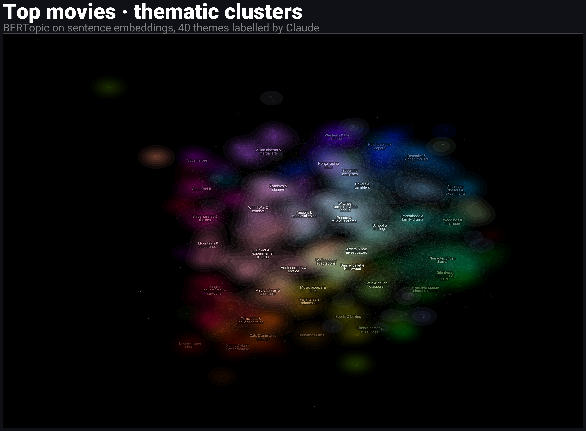

Clustering: The Good, The Bad and The Beautiful
One of the most widely used and most frequently misapplied techniques in machine learning — and how a modern workflow turns messy, high-dimensional data into useful, explainable insights.
Running dataset: the top 5,000 movies by TMDB vote count (and a 100K scale-up at the end). Overviews for text clustering, posters for image clustering. Title nods to The Bad and the Beautiful (1952).
Notebooks
Stack: huggingfacetransformerssentence-transformersBERTopicUMAPHDBSCANEVoCdatamapplotClaude (Anthropic)
The unsupervised-learning pipeline
Every visual on this page sits on one of these stages. The whole talk walks this diagram, left to right, then scales it up.
UMAP stage · the knobs that matterTwo most impactful parameters
n_neighbors — balances local vs. global structure by constraining the size of the local neighborhood UMAP looks at when learning the manifold.
min_dist — the minimum distance UMAP is allowed to place points apart in the reduced space.
Canonical definitions from the UMAP docs.
2,000 movies, looped back and forth, colored by primary genre. Top row: n_neighbors 2 (most local) → 60 (more global). Bottom row: min_dist 0.0 (tight clusters) → 0.8 (evenly spread). Left: overview embeddings. Right: poster embeddings.
n_neighborsn_neighborsmin_distmin_distEncoding stage · swap the encoderThe 3D poster cosmos
Same pipeline, CLIP instead of MiniLM. 1,000 films in 3D, auto-rotating until you grab the camera. Orbit, pan, zoom, hover for the title. Open full-screen.
Encoding stage · keep the encoder, look at the dataPoster constellation · 2D
Each point is an actual movie poster at its UMAP coordinate. 2,000 films; zoom in to read individual titles, out for the shape of the catalog. Open full-screen.
Labels stage · the pivot5,000 movies · interactive thematic hierarchy
BERTopic → agglomerative hierarchy at 5 levels. Zoom out for 5 coarse themes, in for 47 specific ones. Search titles, filter by release year, click any point to open on TMDB. Labels by Claude. Open full-screen.
Labels, before and after LLMs
Same clusters, two labeling layers. Left: c-TF-IDF (what BERTopic shipped as defaults for years). Right: Claude on the top keywords + representative films. Nothing in the pipeline got smarter; the labeling layer did.
| c-TF-IDF keywords | Claude label | Example films |
|---|---|---|
| planet · earth · space · alien | Space sci-fi | Interstellar, Avatar, The Martian |
| queen · prince · princess · king | Royalty & fairy tales | Frozen, Wonder Woman, Aquaman |
| halloween · michael · krueger · freddy | Slasher horror | Scream, The Conjuring, Ghostbusters |
| heist · bank · drug · police | Neo-noir crime | Drive, Scarface, Taxi Driver |
| vampire · dracula · vampires · edward | Vampire romance | Twilight, New Moon, Eclipse |
Scale · what changes at 20×100,000 films
Same pipeline, 20× the data. Fetched by partitioning TMDB queries by primary_release_year to bypass the 500-page global cap — ~10K films per decade for 1960s–2010s. 253 natural BERTopic topics, 60% noise. Coarse hierarchy labelled by Claude; finer layers fall back to c-TF-IDF keywords.

Explore: interactive 100K map (same capabilities as the 5K one — search, release-year filter, TMDB click-through). Supplementary: topics over time (100K), plus the full BERTopic visualization suite on the extras page.
Speaker-only links: presentation open · presentation close (fullscreen, space to advance)